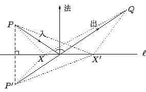
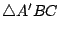
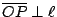
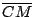
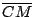

| |
【例題】：
- (1)
- 光的反射定律與極小性：光的反射定律是
「入射線、反射線和平面在反射點的法線三線共面，而且兩者和法線的夾角相等。」
上述定律的幾何意義乃是光反射之途徑是在所有下述通路
之中取極小值。如 [圖1-23] 所示，

[ 圖1-23 ]
- (2)
- 給定
 ，如[圖1-24(i)]所示令 ，如[圖1-24(i)]所示令  為 C
點外角的分角線。設 P 是 上一點，，則恆有
。 為 C
點外角的分角線。設 P 是 上一點，，則恆有
。
[ 圖1-24 ]
如 [圖1-24(ii)] 所示，令 B* 為 B 相對于 的反射對稱點，所以即有
。由此可見，
- (3)
- 內切圓作圖：對于一個給定的
，
唯一存在一個和其三邊相切的圓，稱之為
的內切圓（如 [圖1-25] 所示）。其作圖法如下：
用 [基本作圖1.1]，分別作  和 的角平分線。
則兩線的交點 O' 乃是具有和三邊等距的唯一之點，所以它就是所求作的內心
（內切圓圓心）。 和 的角平分線。
則兩線的交點 O' 乃是具有和三邊等距的唯一之點，所以它就是所求作的內心
（內切圓圓心）。
[ 圖1-25 ]
- (4)
- 設
和

具有相同的外接圓，則
証明：如 [圖1-26] 所示，
 , ,
 , ,
 皆為等腰，所以其底角各別相等，即 [圖1-26] 所示之
,
皆為等腰，所以其底角各別相等，即 [圖1-26] 所示之
,  , ,  。再者， 。再者，
由此可見，上式之角度只和
的大小有關，而和
,
的大小無關。
[注意：上式中的 , , 乃是有向角。如在 A''
的情形， 是負向角。]
[ 圖1-26 ]
【習題】：
- (1)
- 鏡子成象的幾何原理：令 P' 是 P
對于 的反射對稱點。試証起始于
P 點的反射線的延長線共交于 P' 點（如 [圖1-27] 所示）。
[ 圖1-27 ]
- (2)
- 試証明在[定理 1.10]中的「大角對大邊」部分。
- (3)
- 試証明在[基本作圖題 1.4]中的 X1X2 乃是過 上 M 點的垂線。
- (4)
- 試証明在[基本作圖題 1.5]中的 PP' 乃是垂直于 的直線。
- (5)
- 設直線 和圓 Γ 僅交于一點 P，試証
 。
- (6)
- 過圓 Γ 上一點 P 作其切線 。
- (7)
- 設四邊形 的兩對對邊各別等長，試証：
- (i)
- 其對角線互相平分；
- (ii)
- 其兩對對角各別相等。
- (8)
- 設四邊形 的兩對角線互相平分，試証：
- (i)
- 其兩對對邊各別等長；
- (ii)
- 其兩對對角各別相等。
- (9)
- 設
的
 分角線等分對邊 分角線等分對邊
 ，試証 ，試証
 。
[延長  到
（如 [圖1-28] 所示），則可運用習題 (8) 之結果。] 。
[延長  到
（如 [圖1-28] 所示），則可運用習題 (8) 之結果。]
[ 圖1-28 ]
- (10)
- 給定
，如[圖1-29]所示令
 為
的分角線，P' 是 上一點，，試証明
。 為
的分角線，P' 是 上一點，，試証明
。
[ 圖1-29 ]
|
|
|